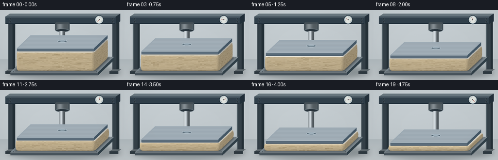
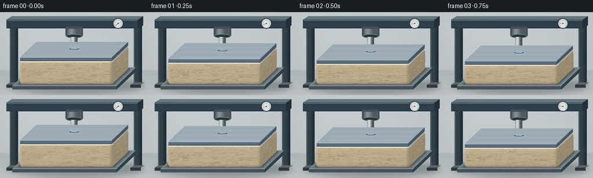

CODING AGENTS AS PIXEL WORLD MODELS
traex/GPT-6.1-Sol · mechanics_0021
点击播放 · 原生 RGB 像素
逐轮保存的候选
回放视频、检查图与代码变化。
每份候选均可单独播放。实际图片检查记录在下方工具轨迹中。
候选 01播放与检查图
点击播放 · 原生 RGB 像素


展开代码变化
--- 上一保存版本
+++ 本次保存版本
@@ -0,0 +1,241 @@
+from pathlib import Path
+import math
+import numpy as np
+from PIL import Image, ImageDraw, ImageFilter
+import artifact_io
+
+ROOT = Path(__file__).resolve().parent
+S = 3
+W,H = 256*S,144*S
+rng = np.random.default_rng(21)
+
+
+def xy(p):
+ x,y,z = p
+ return np.array([(128+.90*x+.30*y)*S,(112-.285*y-.92*z)*S])
+
+def poly(draw, points, fill, outline=None, width=1):
+ pts = [(float(a)*S,float(b)*S) for a,b in points]
+ draw.polygon(pts,fill=fill)
+ if outline: draw.line(pts+[pts[0]],fill=outline,width=max(1,int(width*S)),joint='curve')
+
+def line(draw, pts, fill, width=1):
+ draw.line([(a*S,b*S) for a,b in pts],fill=fill,width=max(1,round(width*S)))
+
+def box(draw,bounds,top,front,right):
+ x0,x1,y0,y1,z0,z1=bounds
+ project=lambda pts:[tuple(xy(p)/S) for p in pts]
+ poly(draw,project([(x0,y0,z0),(x1,y0,z0),(x1,y0,z1),(x0,y0,z1)]),front)
+ poly(draw,project([(x1,y0,z0),(x1,y1,z0),(x1,y1,z1),(x1,y0,z1)]),right)
+ poly(draw,project([(x0,y0,z1),(x1,y0,z1),(x1,y1,z1),(x0,y1,z1)]),top)
+
+# A material-space pore field. It stays attached to the foam as it flattens.
+TW,TH=1800,420
+noise=rng.normal(0,1,(TH,TW))
+coarse=Image.fromarray(np.uint8(np.clip(128+noise*24,0,255))).filter(ImageFilter.GaussianBlur(2))
+base=np.asarray(coarse).astype(float)
+tex=np.empty((TH,TW,3),dtype=np.uint8)
+for c,v in enumerate((223,203,164)):
+ tex[:,:,c]=np.uint8(np.clip(v+(base-128)*.5+noise*1.9,0,255))
+pore=Image.fromarray(tex); pd=ImageDraw.Draw(pore)
+for k in range(14500):
+ u=float(rng.uniform(-3,TW+3)); v=float(rng.uniform(-3,TH+3))
+ rx=float(rng.uniform(.55,2.4)); ry=rx*float(rng.uniform(.65,1.6))
+ dark=int(rng.uniform(9,36))
+ pd.ellipse((u-rx-.55,v-ry-.5,u+rx+.55,v+ry+.5),fill=(232,213,176))
+ pd.ellipse((u-rx,v-ry,u+rx,v+ry),fill=(223-dark,202-dark,161-dark))
+ if rx>1.6: pd.arc((u-rx,v-ry,u+rx,v+ry),180,310,fill=(185-dark//2,165-dark//2,127-dark//2),width=1)
+texture=np.asarray(pore.filter(ImageFilter.GaussianBlur(.23))).astype(float)
+
+# Seamless subtly mottled laboratory background, fixed between frames.
+yy,xx=np.mgrid[:H,:W]
+wall=0.7*(xx/W)+5*np.exp(-((xx/W-.28)**2+(yy/H-.25)**2)/.22)
+back=np.empty((H,W,3),dtype=np.uint8)
+for c,v in enumerate((195,203,207)):
+ back[:,:,c]=np.clip(v+wall-(yy/H)*8+rng.normal(0,.38,(H,W)),0,255)
+background=Image.fromarray(back)
+d=ImageDraw.Draw(background)
+# Soft wall/floor junction.
+for y in range(101*S,H):
+ q=(y/S-101)/43
+ d.line((0,y,W,y),fill=(int(176+17*q),int(185+15*q),int(189+14*q)))
+shadow=Image.new('RGBA',(W,H)); sd=ImageDraw.Draw(shadow)
+sd.ellipse((14*S,114*S,248*S,142*S),fill=(20,30,34,73))
+shadow=shadow.filter(ImageFilter.GaussianBlur(5*S))
+background=Image.alpha_composite(background.convert('RGBA'),shadow).convert('RGB')
+d=ImageDraw.Draw(background)
+# Back supports, a powder-coated steel compression frame.
+for x in (17,231):
+ poly(d,[(x,20),(x+10,20),(x+10,126),(x,126)],(53,65,73))
+ poly(d,[(x+10,20),(x+14,17),(x+14,123),(x+10,126)],(35,47,54))
+ line(d,[(x+1.3,22),(x+1.3,124)],(103,117,124),.75)
+ line(d,[(x+8.6,24),(x+8.6,124)],(38,49,56),.7)
+ poly(d,[(x-6,126),(x+12,126),(x+18,122),(x,122)],(95,105,110))
+ poly(d,[(x-6,126),(x+12,126),(x+12,131),(x-6,131)],(47,58,65))
+poly(d,[(11,13),(238,13),(247,7),(20,7)],(106,120,128))
+poly(d,[(11,13),(238,13),(238,28),(11,28)],(49,64,75))
+poly(d,[(238,13),(247,7),(247,23),(238,28)],(35,49,59))
+line(d,[(12,14),(237,14)],(149,160,166),.65)
+line(d,[(13,27),(236,27)],(29,43,54),.8)
+# Recessed circular screws.
+for x in (21,232):
+ for y in (18,24):
+ d.ellipse(((x-1.8)*S,(y-1.8)*S,(x+1.8)*S,(y+1.8)*S),fill=(29,40,48),outline=(104,119,127),width=1)
+ line(d,[(x-.7,y),(x+.7,y)],(157,165,169),.45)
+# Hydraulic fixed cylinder.
+d.rounded_rectangle((113*S,25*S,143*S,43*S),radius=3*S,fill=(68,79,86))
+d.rectangle((116*S,29*S,140*S,41*S),fill=(83,96,103))
+for x in range(117*S,139*S):
+ q=(x/S-117)/22
+ val=int(82+52*np.exp(-((q-.28)/.26)**2))
+ d.line((x,29*S,x,40*S),fill=(val,val+9,val+14))
+d.ellipse((114*S,38*S,142*S,45*S),fill=(40,51,59),outline=(121,135,143),width=S)
+# Static support platen.
+box(d,(-100,100,-55,55,-7,0),(124,136,143),(72,84,92),(48,63,72))
+line(d,[tuple(xy((-100,-55,0))/S),tuple(xy((100,-55,0))/S)],(180,188,190),.75)
+for x,y in ((-95,-50),(95,-50),(95,50)):
+ p=xy((x,y,.1))/S
+ d.ellipse(((p[0]-1.5)*S,(p[1]-.65)*S,(p[0]+1.5)*S,(p[1]+.65)*S),fill=(61,73,81),outline=(172,180,183),width=1)
+
+
+def foam_mesh(h, t):
+ # Rounded rectangular perimeter, counterclockwise in world space.
+ corners=[(83,41,0),( -83,41,90),(-83,-41,180),(83,-41,270)]
+ # Traverse rear-right -> rear-left -> front-left -> front-right.
+ ring=[]
+ for cx,cy,a0 in corners:
+ for j in range(12):
+ a=math.radians(a0+j*90/12)
+ ring.append((cx+7*math.cos(a),cy+7*math.sin(a)))
+ ring=np.asarray(ring); n=len(ring)
+ levels=np.linspace(0,1,17)
+ vertices=[]
+ for v in levels:
+ rounded=1.8*(math.exp(-v*22)+math.exp(-(1-v)*22))
+ bulge=2.7*t*(math.sin(math.pi*v)**.8)
+ for i,(x,y) in enumerate(ring):
+ X=x*(1+(bulge+.9*t-rounded)/90)
+ Y=y*(1+(bulge*.55+.6*t-rounded)/48)
+ vertices.append((X,Y,v*h,i/n,v))
+ verts=np.array(vertices)
+ tris=[]
+ for j in range(len(levels)-1):
+ for i in range(n):
+ k=(i+1)%n
+ a=j*n+i;b=j*n+k;c=(j+1)*n+k; e=(j+1)*n+i
+ tris.append((a,b,c));tris.append((a,c,e))
+ # A foam top, mostly occluded by the rigid platen.
+ center=len(verts); verts=np.vstack((verts,np.array([[0,0,h,.5,1]])))
+ for i in range(n): tris.append((center,(len(levels)-1)*n+i,(len(levels)-1)*n+(i+1)%n))
+ return verts,tris
+
+
+def render_foam(im,h,t):
+ arr=np.asarray(im).copy().astype(float)
+ zbuf=np.full((H,W),-1e9)
+ verts,triangles=foam_mesh(h,t)
+ projected=np.array([xy(v[:3]) for v in verts])
+ cam=np.array([1/3,-1,.285/.92]);cam/=np.linalg.norm(cam)
+ light=np.array([-.5,-.65,1.2]);light/=np.linalg.norm(light)
+ for inds in triangles:
+ v=verts[list(inds)].copy();p=projected[list(inds)]
+ normal=np.cross(v[1,:3]-v[0,:3],v[2,:3]-v[0,:3]); nl=np.linalg.norm(normal)
+ if nl<1e-9: continue
+ normal/=nl
+ # Rectangular perimeter winds counterclockwise; side triangles face outward.
+ if np.dot(normal,cam)<0: continue
+ x0=max(0,int(np.floor(p[:,0].min()))); x1=min(W-1,int(np.ceil(p[:,0].max())))
+ y0=max(0,int(np.floor(p[:,1].min()))); y1=min(H-1,int(np.ceil(p[:,1].max())))
+ if x0>x1 or y0>y1: continue
+ X,Y=np.meshgrid(np.arange(x0,x1+1)+.5,np.arange(y0,y1+1)+.5)
+ den=(p[1,1]-p[2,1])*(p[0,0]-p[2,0])+(p[2,0]-p[1,0])*(p[0,1]-p[2,1])
+ if abs(den)<1e-9: continue
+ a=((p[1,1]-p[2,1])*(X-p[2,0])+(p[2,0]-p[1,0])*(Y-p[2,1]))/den
+ b=((p[2,1]-p[0,1])*(X-p[2,0])+(p[0,0]-p[2,0])*(Y-p[2,1]))/den
+ c=1-a-b
+ dep=a*np.dot(v[0,:3],cam)+b*np.dot(v[1,:3],cam)+c*np.dot(v[2,:3],cam)
+ zz=zbuf[y0:y1+1,x0:x1+1]
+ mask=(a>=-1e-5)&(b>=-1e-5)&(c>=-1e-5)&(dep>zz)
+ if not np.any(mask):continue
+ # Handle UV wrap at the last corner.
+ us=v[:,3].copy()
+ if us.max()-us.min()>.6: us[us<.5]+=1
+ u=(a*us[0]+b*us[1]+c*us[2])%1
+ vv=np.clip(a*v[0,4]+b*v[1,4]+c*v[2,4],0,1)
+ tx=(u*(TW-1)).astype(int);ty=(vv*(TH-1)).astype(int)
+ color=texture[ty,tx].copy()
+ shade=.71+.33*max(0,np.dot(normal,light))
+ # Slight contact occlusion, becoming stronger as cell structure densifies.
+ shade=shade*(1-.10*np.exp(-vv*26)-.10*np.exp(-(1-vv)*35))
+ color*=shade[:,:,None]
+ # A thin cream ticking wrap at the top with a stitched edge.
+ band=np.clip((vv-.927)/.025,0,1)
+ cotton=np.stack((239+u*0,236+u*0,225+u*0),axis=-1)*shade[:,:,None]
+ cotton+=(2*np.sin(u*900)*np.sin(vv*1000))[:,:,None]
+ color=color*(1-band[:,:,None])+cotton*band[:,:,None]
+ # Continuous stitched top piping follows the foam, not the press.
+ seam=np.exp(-((vv-.929)/.006)**2)
+ color-=seam[:,:,None]*14
+ view=arr[y0:y1+1,x0:x1+1]
+ view[mask]=color[mask]
+ zz[mask]=dep[mask]
+ return Image.fromarray(np.uint8(np.clip(arr,0,255)))
+
+
+def render(i):
+ t=i/19
+ strain=t**.83
+ h=44-32*strain
+ im=background.copy()
+ # Mattress contact shadow on lower platen.
+ sh=Image.new('RGBA',(W,H));dr=ImageDraw.Draw(sh)
+ ps=[xy(p)/S for p in [(-93,-49,.15),(93,-49,.15),(93,49,.15),(-93,49,.15)]]
+ poly(dr,ps,(26,24,17,110))
+ sh=sh.filter(ImageFilter.GaussianBlur(1.5*S))
+ im=Image.alpha_composite(im.convert('RGBA'),sh).convert('RGB')
+ im=render_foam(im,h,strain)
+ d=ImageDraw.Draw(im)
+ # Polished piston progressively extends down from its stationary cylinder.
+ attach=float(xy((0,0,h+7.3))[1]/S)
+ for x in range(122*S,134*S):
+ f=(x/S-122)/12
+ g=int(108+116*math.exp(-((f-.32)/.24)**2)-35*f)
+ d.line((x,43*S,x,(attach-1)*S),fill=(g,min(255,g+8),min(255,g+13)))
+ line(d,[(123,44),(123,attach-1)],(236,243,245),.6)
+ # Massive horizontal platen. It never tilts or changes shape.
+ box(d,(-88,88,-47,47,h,h+7),(156,170,180),(91,108,122),(68,87,102))
+ # Brushed, directional highlights on the steel top.
+ for k in range(24):
+ y=-44+k*3.7
+ p1=xy((-85,y,h+7.02))/S;p2=xy((85,y,h+7.02))/S
+ value=int(169+8*math.sin(k*.8))
+ line(d,[p1,p2],(value,value+10,value+17),.20)
+ p1=xy((-88,-47,h+7))/S;p2=xy((88,-47,h+7))/S
+ line(d,[p1,p2],(207,219,226),.65)
+ p1=xy((-88,-47,h+.5))/S;p2=xy((88,-47,h+.5))/S
+ line(d,[p1,p2],(48,62,73),.8)
+ # Platen/piston coupling collar.
+ cy=attach-.6
+ d.ellipse((118*S,(cy-3)*S,138*S,(cy+2.5)*S),fill=(89,107,119),outline=(179,194,204),width=S)
+ d.ellipse((122*S,(cy-2.5)*S,134*S,(cy+.5)*S),fill=(155,172,183))
+ # An analog pressure gauge, its needle visibly increases with compression.
+ gx,gy,r=204,19.7,8.2
+ d.ellipse(((gx-r-.9)*S,(gy-r-.9)*S,(gx+r+.9)*S,(gy+r+.9)*S),fill=(28,43,53))
+ d.ellipse(((gx-r)*S,(gy-r)*S,(gx+r)*S,(gy+r)*S),fill=(224,229,225),outline=(160,178,189),width=S)
+ for k in range(11):
+ a=math.radians(140+k*26)
+ line(d,[(gx+6.7*math.cos(a),gy+6.7*math.sin(a)),(gx+5.3*math.cos(a),gy+5.3*math.sin(a))],(65,77,83),.4)
+ a=math.radians(140+260*t)
+ line(d,[(gx-1.5*math.cos(a),gy-1.5*math.sin(a)),(gx+5.4*math.cos(a),gy+5.4*math.sin(a))],(158,48,40),.7)
+ d.ellipse(((gx-.85)*S,(gy-.85)*S,(gx+.85)*S,(gy+.85)*S),fill=(53,61,65))
+ # Very subtle lens vignette, no camera drift or exposure flicker.
+ ar=np.asarray(im).astype(float)
+ vignette=1-.065*((xx/W-.5)**2+(yy/H-.5)**2)
+ ar*=vignette[:,:,None]
+ im=Image.fromarray(np.uint8(np.clip(ar,0,255)))
+ return np.asarray(im.resize((256,144),Image.Resampling.LANCZOS))
+
+if __name__=='__main__':
+ frames=np.stack([render(i) for i in range(20)])
+ artifact_io.save(frames,ROOT)
+ print(f'Saved {len(frames)} RGB frames, shape {frames.shape}, at 4 fps.')
可观测工具轨迹
实际执行的命令与返回图片。
命令 1exit 0
/bin/bash -lc 'ls -la && cat prompt.txt && cat GENERATION_RULES.md && cat task_spec.json'
命令 2exit 0
/bin/bash -lc 'cat artifact_io.py'
命令 3exit 0
/bin/bash -lc "python - <<'PY'
import PIL, numpy
print('PIL',PIL.__version__)
PY"命令 4exit 0
/bin/bash -lc "cat > generate.py <<'PY'
from pathlib import Path
import math
import numpy as np
from PIL import Image, ImageDraw, ImageFilter
import artifact_io
ROOT = Path(__file__).resolve().parent
S = 3
W,H = 256*S,144*S
rng = np.random.default_rng(21)
def xy(p):
x,y,z = p
return np.array([(128+.90*x+.30*y)*S,(112-.285*y-.92*z)*S])
def poly(draw, points, fill, outline=None, width=1):
pts = [(float(a)*S,float(b)*S) for a,b in points]
draw.polygon(pts,fill=fill)
if outline: draw.line(pts+[pts[0]],fill=outline,width=max(1,int(width*S)),joint='curve')
def line(draw, pts, fill, width=1):
draw.line([(a*S,b*S) for a,b in pts],fill=fill,width=max(1,round(width*S)))
def box(draw,bounds,top,front,right):
x0,x1,y0,y1,z0,z1=bounds
project=lambda pts:[tuple(xy(p)/S) for p in pts]
poly(draw,project([(x0,y0,z0),(x1,y0,z0),(x1,y0,z1),(x0,y0,z1)]),front)
poly(draw,project([(x1,y0,z0),(x1,y1,z0),(x1,y1,z1),(x1,y0,z1)]),right)
poly(draw,project([(x0,y0,z1),(x1,y0,z1),(x1,y1,z1),(x0,y1,z1)]),top)
# A material-space pore field. It stays attached to the foam as it flattens.
TW,TH=1800,420
noise=rng.normal(0,1,(TH,TW))
coarse=Image.fromarray(np.uint8(np.clip(128+noise*24,0,255))).filter(ImageFilter.GaussianBlur(2))
base=np.asarray(coarse).astype(float)
tex=np.empty((TH,TW,3),dtype=np.uint8)
for c,v in enumerate((223,203,164)):
tex[:,:,c]=np.uint8(np.clip(v+(base-128)*.5+noise*1.9,0,255))
pore=Image.fromarray(tex); pd=ImageDraw.Draw(pore)
for k in range(14500):
u=float(rng.uniform(-3,TW+3)); v=float(rng.uniform(-3,TH+3))
rx=float(rng.uniform(.55,2.4)); ry=rx*float(rng.uniform(.65,1.6))
dark=int(rng.uniform(9,36))
pd.ellipse((u-rx-.55,v-ry-.5,u+rx+.55,v+ry+.5),fill=(232,213,176))
pd.ellipse((u-rx,v-ry,u+rx,v+ry),fill=(223-dark,202-dark,161-dark))
if rx>1.6: pd.arc((u-rx,v-ry,u+rx,v+ry),180,310,fill=(185-dark//2,165-dark//2,127-dark//2),width=1)
texture=np.asarray(pore.filter(ImageFilter.GaussianBlur(.23))).astype(float)
# Seamless subtly mottled laboratory background, fixed between frames.
yy,xx=np.mgrid[:H,:W]
wall=0.7*(xx/W)+5*np.exp(-((xx/W-.28)**2+(yy/H-.25)**2)/.22)
back=np.empty((H,W,3),dtype=np.uint8)
for c,v in enumerate((195,203,207)):
back[:,:,c]=np.clip(v+wall-(yy/H)*8+rng.normal(0,.38,(H,W)),0,255)
background=Image.fromarray(back)
d=ImageDraw.Draw(background)
# Soft wall/floor junction.
for y in range(101*S,H):
q=(y/S-101)/43
d.line((0,y,W,y),fill=(int(176+17*q),int(185+15*q),int(189+14*q)))
shadow=Image.new('RGBA',(W,H)); sd=ImageDraw.Draw(shadow)
sd.ellipse((14*S,114*S,248*S,142*S),fill=(20,30,34,73))
shadow=shadow.filter(ImageFilter.GaussianBlur(5*S))
background=Image.alpha_composite(background.convert('RGBA'),shadow).convert('RGB')
d=ImageDraw.Draw(background)
# Back supports, a powder-coated steel compression frame.
for x in (17,231):
poly(d,[(x,20),(x+10,20),(x+10,126),(x,126)],(53,65,73))
poly(d,[(x+10,20),(x+14,17),(x+14,123),(x+10,126)],(35,47,54))
line(d,[(x+1.3,22),(x+1.3,124)],(103,117,124),.75)
line(d,[(x+8.6,24),(x+8.6,124)],(38,49,56),.7)
poly(d,[(x-6,126),(x+12,126),(x+18,122),(x,122)],(95,105,110))
poly(d,[(x-6,126),(x+12,126),(x+12,131),(x-6,131)],(47,58,65))
poly(d,[(11,13),(238,13),(247,7),(20,7)],(106,120,128))
poly(d,[(11,13),(238,13),(238,28),(11,28)],(49,64,75))
poly(d,[(238,13),(247,7),(247,23),(238,28)],(35,49,59))
line(d,[(12,14),(237,14)],(149,160,166),.65)
line(d,[(13,27),(236,27)],(29,43,54),.8)
# Recessed circular screws.
for x in (21,232):
for y in (18,24):
d.ellipse(((x-1.8)*S,(y-1.8)*S,(x+1.8)*S,(y+1.8)*S),fill=(29,40,48),outline=(104,119,127),width=1)
line(d,[(x-.7,y),(x+.7,y)],(157,165,169),.45)
# Hydraulic fixed cylinder.
d.rounded_rectangle((113*S,25*S,143*S,43*S),radius=3*S,fill=(68,79,86))
d.rectangle((116*S,29*S,140*S,41*S),fill=(83,96,103))
for x in range(117*S,139*S):
q=(x/S-117)/22
val=int(82+52*np.exp(-((q-.28)/.26)**2))
d.line((x,29*S,x,40*S),fill=(val,val+9,val+14))
d.ellipse((114*S,38*S,142*S,45*S),fill=(40,51,59),outline=(121,135,143),width=S)
# Static support platen.
box(d,(-100,100,-55,55,-7,0),(124,136,143),(72,84,92),(48,63,72))
line(d,[tuple(xy((-100,-55,0))/S),tuple(xy((100,-55,0))/S)],(180,188,190),.75)
for x,y in ((-95,-50),(95,-50),(95,50)):
p=xy((x,y,.1))/S
d.ellipse(((p[0]-1.5)*S,(p[1]-.65)*S,(p[0]+1.5)*S,(p[1]+.65)*S),fill=(61,73,81),outline=(172,180,183),width=1)
def foam_mesh(h, t):
# Rounded rectangular perimeter, counterclockwise in world space.
corners=[(83,41,0),( -83,41,90),(-83,-41,180),(83,-41,270)]
# Traverse rear-right -> rear-left -> front-left -> front-right.
ring=[]
for cx,cy,a0 in corners:
for j in range(12):
a=math.radians(a0+j*90/12)
ring.append((cx+7*math.cos(a),cy+7*math.sin(a)))
ring=np.asarray(ring); n=len(ring)
levels=np.linspace(0,1,17)
vertices=[]
for v in levels:
rounded=1.8*(math.exp(-v*22)+math.exp(-(1-v)*22))
bulge=2.7*t*(math.sin(math.pi*v)**.8)
for i,(x,y) in enumerate(ring):
X=x*(1+(bulge+.9*t-rounded)/90)
Y=y*(1+(bulge*.55+.6*t-rounded)/48)
vertices.append((X,Y,v*h,i/n,v))
verts=np.array(vertices)
tris=[]
for j in range(len(levels)-1):
for i in range(n):
k=(i+1)%n
a=j*n+i;b=j*n+k;c=(j+1)*n+k; e=(j+1)*n+i
tris.append((a,b,c));tris.append((a,c,e))
# A foam top, mostly occluded by the rigid platen.
center=len(verts); verts=np.vstack((verts,np.array([[0,0,h,.5,1]])))
for i in range(n): tris.append((center,(len(levels)-1)*n+i,(len(levels)-1)*n+(i+1)%n))
return verts,tris
def render_foam(im,h,t):
arr=np.asarray(im).copy().astype(float)
zbuf=np.full((H,W),-1e9)
verts,triangles=foam_mesh(h,t)
projected=np.array([xy(v[:3]) for v in verts])
cam=np.array([1/3,-1,.285/.92]);cam/=np.linalg.norm(cam)
light=np.array([-.5,-.65,1.2]);light/=np.linalg.norm(light)
for inds in triangles:
v=verts[list(inds)].copy();p=projected[list(inds)]
normal=np.cross(v[1,:3]-v[0,:3],v[2,:3]-v[0,:3]); nl=np.linalg.norm(normal)
if nl<1e-9: continue
normal/=nl
# Rectangular perimeter winds counterclockwise; side triangles face outward.
if np.dot(normal,cam)<0: continue
x0=max(0,int(np.floor(p[:,0].min()))); x1=min(W-1,int(np.ceil(p[:,0].max())))
y0=max(0,int(np.floor(p[:,1].min()))); y1=min(H-1,int(np.ceil(p[:,1].max())))
if x0>x1 or y0>y1: continue
X,Y=np.meshgrid(np.arange(x0,x1+1)+.5,np.arange(y0,y1+1)+.5)
den=(p[1,1]-p[2,1])*(p[0,0]-p[2,0])+(p[2,0]-p[1,0])*(p[0,1]-p[2,1])
if abs(den)<1e-9: continue
a=((p[1,1]-p[2,1])*(X-p[2,0])+(p[2,0]-p[1,0])*(Y-p[2,1]))/den
b=((p[2,1]-p[0,1])*(X-p[2,0])+(p[0,0]-p[2,0])*(Y-p[2,1]))/den
c=1-a-b
dep=a*np.dot(v[0,:3],cam)+b*np.dot(v[1,:3],cam)+c*np.dot(v[2,:3],cam)
zz=zbuf[y0:y1+1,x0:x1+1]
mask=(a>=-1e-5)&(b>=-1e-5)&(c>=-1e-5)&(dep>zz)
if not np.any(mask):continue
# Handle UV wrap at the last corner.
us=v[:,3].copy()
if us.max()-us.min()>.6: us[us<.5]+=1
u=(a*us[0]+b*us[1]+c*us[2])%1
vv=np.clip(a*v[0,4]+b*v[1,4]+c*v[2,4],0,1)
tx=(u*(TW-1)).astype(int);ty=(vv*(TH-1)).astype(int)
color=texture[ty,tx].copy()
shade=.71+.33*max(0,np.dot(normal,light))
# Slight contact occlusion, becoming stronger as cell structure densifies.
shade=shade*(1-.10*np.exp(-vv*26)-.10*np.exp(-(1-vv)*35))
color*=shade[:,:,None]
# A thin cream ticking wrap at the top with a stitched edge.
band=np.clip((vv-.927)/.025,0,1)
cotton=np.stack((239+u*0,236+u*0,225+u*0),axis=-1)*shade[:,:,None]
cotton+=(2*np.sin(u*900)*np.sin(vv*1000))[:,:,None]
color=color*(1-band[:,:,None])+cotton*band[:,:,None]
# Continuous stitched top piping follows the foam, not the press.
seam=np.exp(-((vv-.929)/.006)**2)
color-=seam[:,:,None]*14
view=arr[y0:y1+1,x0:x1+1]
view[mask]=color[mask]
zz[mask]=dep[mask]
return Image.fromarray(np.uint8(np.clip(arr,0,255)))
def render(i):
t=i/19
strain=t**.83
h=44-32*strain
im=background.copy()
# Mattress contact shadow on lower platen.
sh=Image.new('RGBA',(W,H));dr=ImageDraw.Draw(sh)
ps=[xy(p)/S for p in [(-93,-49,.15),(93,-49,.15),(93,49,.15),(-93,49,.15)]]
poly(dr,ps,(26,24,17,110))
sh=sh.filter(ImageFilter.GaussianBlur(1.5*S))
im=Image.alpha_composite(im.convert('RGBA'),sh).convert('RGB')
im=render_foam(im,h,strain)
d=ImageDraw.Draw(im)
# Polished piston progressively extends down from its stationary cylinder.
attach=float(xy((0,0,h+7.3))[1]/S)
for x in range(122*S,134*S):
f=(x/S-122)/12
g=int(108+116*math.exp(-((f-.32)/.24)**2)-35*f)
d.line((x,43*S,x,(attach-1)*S),fill=(g,min(255,g+8),min(255,g+13)))
line(d,[(123,44),(123,attach-1)],(236,243,245),.6)
# Massive horizontal platen. It never tilts or changes shape.
box(d,(-88,88,-47,47,h,h+7),(156,170,180),(91,108,122),(68,87,102))
# Brushed, directional highlights on the steel top.
for k in range(24):
y=-44+k*3.7
p1=xy((-85,y,h+7.02))/S;p2=xy((85,y,h+7.02))/S
value=int(169+8*math.sin(k*.8))
line(d,[p1,p2],(value,value+10,value+17),.20)
p1=xy((-88,-47,h+7))/S;p2=xy((88,-47,h+7))/S
line(d,[p1,p2],(207,219,226),.65)
p1=xy((-88,-47,h+.5))/S;p2=xy((88,-47,h+.5))/S
line(d,[p1,p2],(48,62,73),.8)
# Platen/piston coupling collar.
cy=attach-.6
d.ellipse((118*S,(cy-3)*S,138*S,(cy+2.5)*S),fill=(89,107,119),outline=(179,194,204),width=S)
d.ellipse((122*S,(cy-2.5)*S,134*S,(cy+.5)*S),fill=(155,172,183))
# An analog pressure gauge, its needle visibly increases with compression.
gx,gy,r=204,19.7,8.2
d.ellipse(((gx-r-.9)*S,(gy-r-.9)*S,(gx+r+.9)*S,(gy+r+.9)*S),fill=(28,43,53))
d.ellipse(((gx-r)*S,(gy-r)*S,(gx+r)*S,(gy+r)*S),fill=(224,229,225),outline=(160,178,189),width=S)
for k in range(11):
a=math.radians(140+k*26)
line(d,[(gx+6.7*math.cos(a),gy+6.7*math.sin(a)),(gx+5.3*math.cos(a),gy+5.3*math.sin(a))],(65,77,83),.4)
a=math.radians(140+260*t)
line(d,[(gx-1.5*math.cos(a),gy-1.5*math.sin(a)),(gx+5.4*math.cos(a),gy+5.4*math.sin(a))],(158,48,40),.7)
d.ellipse(((gx-.85)*S,(gy-.85)*S,(gx+.85)*S,(gy+.85)*S),fill=(53,61,65))
# Very subtle lens vignette, no camera drift or exposure flicker.
ar=np.asarray(im).astype(float)
vignette=1-.065*((xx/W-.5)**2+(yy/H-.5)**2)
ar*=vignette[:,:,None]
im=Image.fromarray(np.uint8(np.clip(ar,0,255)))
return np.asarray(im.resize((256,144),Image.Resampling.LANCZOS))
if __name__=='__main__':
frames=np.stack([render(i) for i in range(20)])
artifact_io.save(frames,ROOT)
print(f'Saved {len(frames)} RGB frames, shape {frames.shape}, at 4 fps.')
PY
python generate.py"命令 5exit 0
/bin/bash -lc "python - <<'PY'
from pathlib import Path
import numpy as np
from PIL import Image
p=Path('.')
a=np.stack([np.array(Image.open(p/'frames'/f'{i:02d}.png')) for i in range(20)])
for i in [0,5,10,15,19]:
f=a[i]; mask=(f[:,:,0].astype(int)-f[:,:,2].astype(int)>25)&(f[:,:,0]>120)
y,x=np.where(mask)
print(i,'foam pixels:',len(y),'vertical range:',(y.min(),y.max()),'mean RGB:',f.mean(axis=(0,1)).round(1))
assert a.shape==(20,144,256,3)
assert a.dtype==np.uint8
print('Output artifacts:',[str(p) for p in [Path('pixels.npz'),Path('index.html'),Path('inspection.png'),Path('generate.py')] if p.exists()])
print('Mean adjacent-frame change',np.abs(np.diff(a.astype(float),axis=0)).mean().round(3))
PY"命令 6exit 2
/bin/bash -lc 'if command -v ffmpeg >/dev/null 2>&1; then ffmpeg -hide_banner -loglevel error -y -framerate 4 -i frames/%02d.png -c:v libx264 -crf 17 -pix_fmt yuv420p -movflags +faststart video.mp4; fi ls -lh pixels.npz index.html video.mp4 2>/dev/null'
保存候选 1 份；完成命令 6 次；可验证图片返回 0 张。原始 API 响应与完整日志保留在本地。